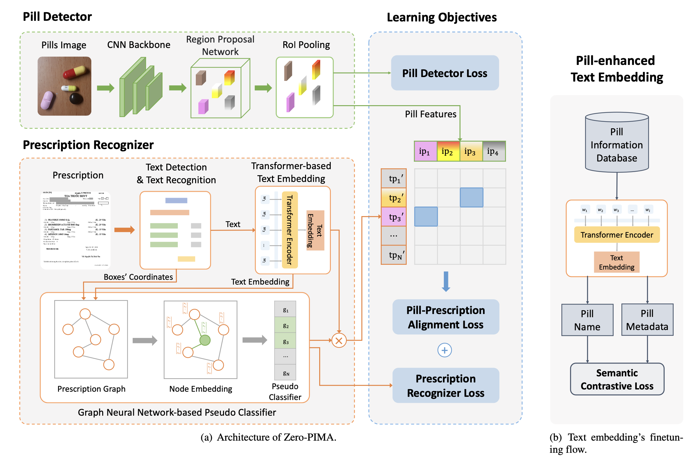
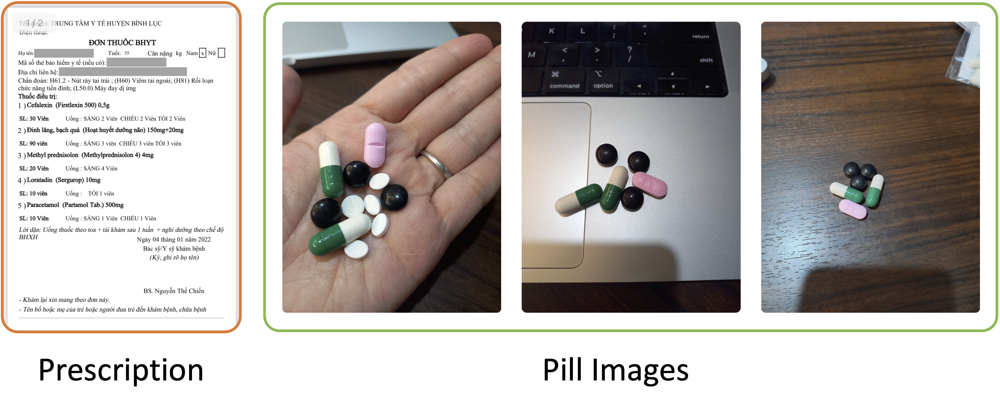

An End-to-end Pill-Prescription Matching Framework
Zero-PIMA architecture consists of three modules: Pill Detector, Prescription Recognizer, and Learning Objectives.

- Pill Detector is responsible for localizing and extracting visual information from a multi-pill photo.
- Pill Prescription Recognizer utilizes a Graph Convolutional Network to highlight the text boxes likely to be pill names and a pill-enhanced text embedding to learn representations of pill names.
- Textual and visual data are fed into the Pill-Prescription alignment in the Learning Objective module to produce a text-image retrieval result.
Figure 2. Overview of Zero-PIMA. (a) Illustration of the Zero-PIMA architecture consists of three modules: Pill Detector, Prescription Recognizer, and Learning Objectives. (b) Semantic contrastive loss is applied to integrate pills’ metadata into the pill names’ embeddings.
VAIPEPP Dataset
VAIPEPP dataset was collected in real-world scenarios, where samples were taken in unconstrained environments.
It consists of 2,156 multi-pill photos matching 1,527 prescriptions across 4 different templates.
These were collected from anonymous patients at leading hospitals in Vietnam between 2021 and 2022.

Figure 3. Representative examples from our VAIPEPP dataset.
Visualization
Visualization of some predictions for unseen pill detection. Each column presents the prescription, the ground-truth pill images, and the predictions.

Figure 4: Illustration of some accurate predictions

Figure 5: Illustration of some incorrect predictions
Acknowledgment
The computation was carried out using the General Projects on the supercomputer "Flow" with the Information Technology Center, Nagoya University.
This work was funded by Vingroup Joint Stock Company (Vingroup JSC), Vingroup, and supported by Vingroup Innovation Foundation (VINIF) under project code VINIF.2021.DA00128. This work was partly supported by JSPS KAKENHI JP21H0355.
BibTeX
@article{nguyen2024zeropima,
title={Zero-shot Pill-Prescription Matching with Graph Convolutional Network and Contrastive Learning},
author={Trung Thanh Nguyen and Phi Le Nguyen and Kawanishi Yasutomo and Takahiro Komamizu and Ichiro Ide},
year={2024},
journal={IEEE Access}
}